National Model Railroad Association · Achievement Program
Model Railroad Engineer – Electrical
Statement of Qualifications: supporting documentation

National Model Railroad Association · Achievement Program
Statement of Qualifications: supporting documentation
This document goes with my SOQ form for the Model Railroad Engineer – Electrical certificate. It describes the wiring on my HO layout, the HART Railroad, and shows where each requirement on the form is met.
The layout has three levels joined by a two-track helix. The lowest level, the staging level, is finished and wired, and is used for operating sessions. Everything in this document is on the staging level and the helix. The two upper levels are still being built.
The layout runs on DCC. The main parts of the electrical system are:
Chapter 2 is a checklist of every requirement and where to find it.
Plan P1 shows the staging level. To keep it easy to follow, I use simple labels instead of my railroad's own track names. Appendix A matches each label to the name on the layout.
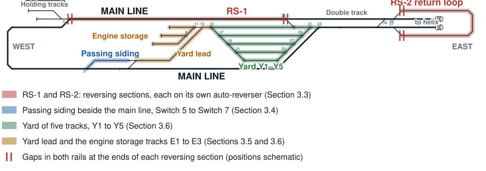
| Label | What it is |
|---|---|
| Main line | The main loop of the staging level |
| RS-1 | Reversing section 1: the west part of the main line, Switch 1 to Switch 23 |
| RS-2 | Reversing section 2: the return loop at the east end |
| Passing siding | The siding beside the main line, Switch 5 to Switch 7 |
| Y1 to Y5 | The five yard tracks |
| Yard lead | The track that serves the yard, Switch 7 to Switch 15 |
| E1 to E3 | The three engine storage tracks |
| Section | A piece of track with gaps in both rails at both ends and its own feeders and detector. The SOQ form calls this a block. |
The layout runs on DCC. Every locomotive has a decoder with its own address, and it only follows commands sent to that address. So two trains can run at the same time anywhere on the main line, in either direction, each on its own throttle. The command station and booster are shown in , in .

The staging level and helix are split into six power districts. Four are on DCC Specialties PSX circuit breakers. The other two are the reversing sections, which are on auto-reversers that also shut off on a short. A short only shuts down its own district, and the breaker's light shows which one tripped.
The districts are split again into 43 sections. Each section has gaps in both rails at both ends and its own pair of feeder wires from the district bus (drawing D2). If there is a problem, I can disconnect one section's feeders at the terminal strip to find it. Appendix B lists all 43 sections.

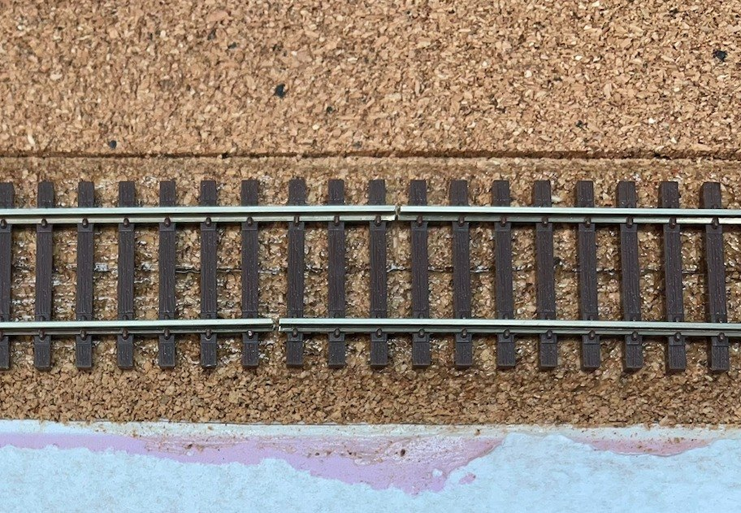
The terminal strips under the layout all use the same eight positions and wire colours, so any bus or feeder can be traced the same way at every strip.
| Terminal | Carries | Wire colour |
|---|---|---|
| 1 | DCC1 + | Red, or Green on a secondary bus |
| 2 | DCC1 – | Black, or Brown on a secondary bus |
| 3 | DCC2 + | White |
| 4 | DCC2 – | Blue |
| 5 | +12 V | Yellow |
| 6 | +5 V | Red |
| 7 | +3.3 V | Orange |
| 8 | Ground | Black |
At the east end of the main line is a return loop, RS-2 (Plan P2). A train goes out on one track, around the loop, and comes back on the other track facing the other way. The loop has gaps in both rails at both ends and is powered through a DCC Specialties PSXX-AR auto-reverser (drawing D5). It is two detected sections, one on each output of the same DNCT2B detector. Because both get power from the one auto-reverser, they always change polarity together, so for wiring and troubleshooting they are one reversing section.
The main line also loops back on itself at the west end, so the west part of the main line, RS-1, is a second reversing section. It is wired the same way on an NCE AR10. RS-1 is 217 in long, longer than any train on the level.
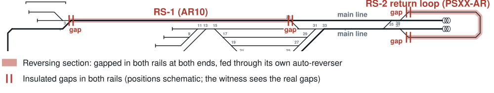


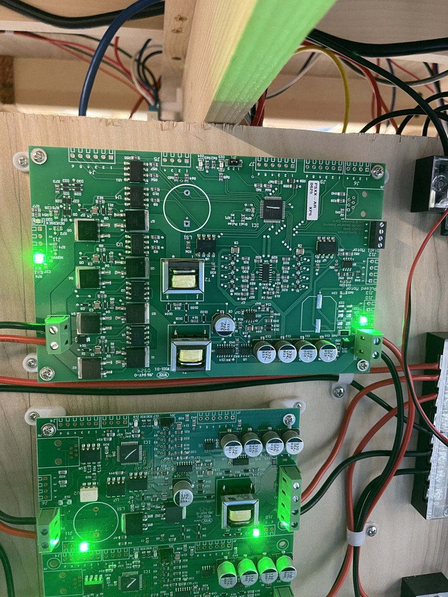
The passing siding runs beside the main line from Switch 5 to Switch 7 (Plan P3). It is 144 in long, about 19 cars, and joins the main line at both ends. One train can wait on the siding while another passes on the main.


Three engine storage tracks, E1 to E3, branch off the yard lead at Switches 9 and 11 (Plan P5). Each holds at least one locomotive. A locomotive parked there stays put while other trains run.

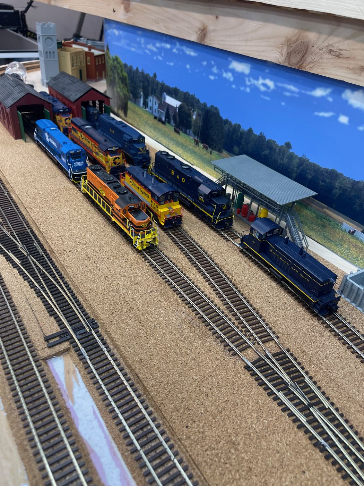
The yard has five tracks, Y1 to Y5, from 100 to 218 in long (Plan P4). A switcher works the yard from the yard lead, which leaves the main line at Switch 7 and runs on its own track to the yard ladder. Trains can keep running on the main line while the yard is switched.
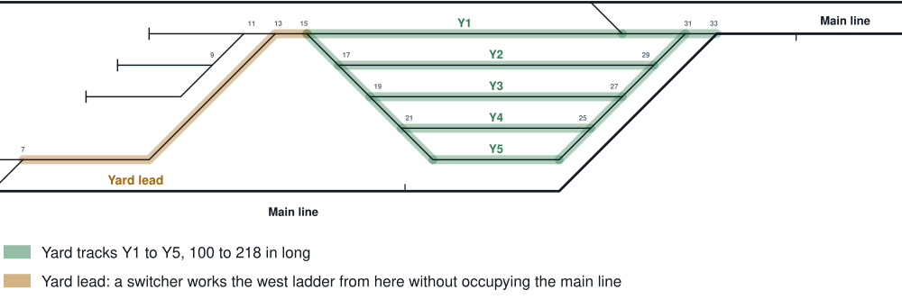

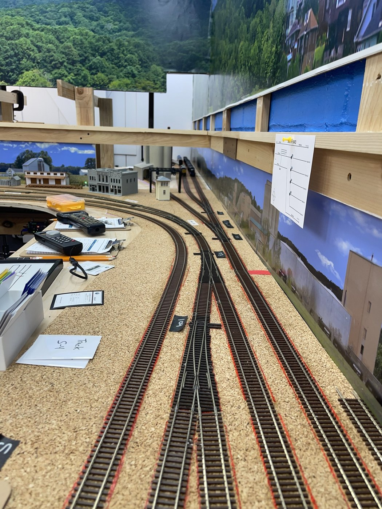
The command station and booster feed the districts through a set of terminal strips (the booster matrix). Each district has its own protection (drawing D1 and ):
The command station and booster also have their own short protection. The booster matrix has room for a second booster if I need one later.

I claim three items: turnouts, crossovers, and reversing sections on auto-reversers.
Every turnout on the staging level is a Peco turnout with a powered frog. Each one is thrown by an MTB MP4 slow-motion switch machine under the layout. The MP4 has two built-in switches (SPDT contacts) that move with the points (drawing D3):
The switch machine is driven by a 12 V output on the nearby LCOS node, so a turnout can be thrown from the fascia button, a DCC throttle or the computer.
Parts: Peco turnouts, MTB MP4 switch machines, LCOS output and input boards.


There are crossovers at Switch 23, Switch 35 and Switch 7. Each is two turnouts, wired like any other turnout, and both machines throw together. Because each frog has its own polarity, both rails between the two frogs are gapped (drawing D4). Each half is its own detected section.
The two halves share one pair of position inputs on the node. Their position contacts are wired in series, so the computer panel shows normal only when both halves are normal and reverse only when both are reverse. If the halves disagree, neither light comes on and JMRI shows the crossover as inconsistent (drawing D4).
Parts: the same as for a turnout.

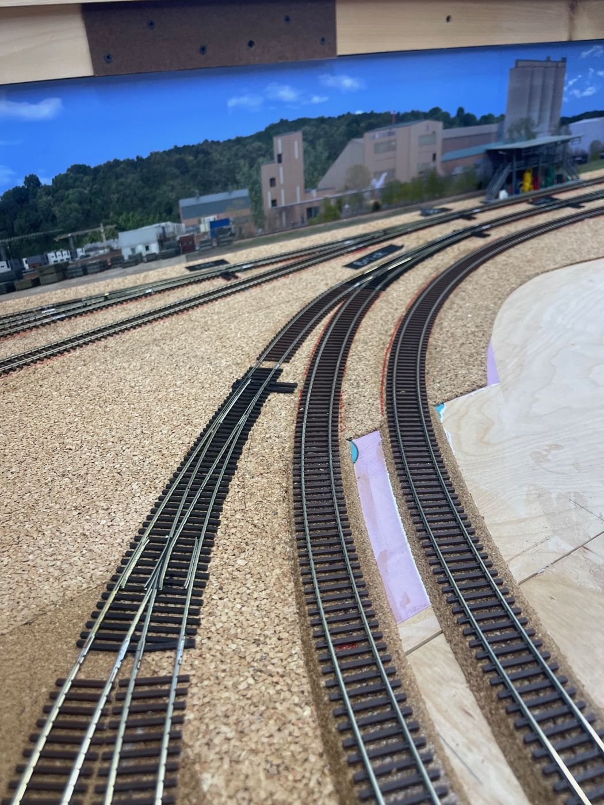
RS-1 and RS-2 (Section 3.3) each have gaps in both rails at both ends and get power through their own auto-reverser. The auto-reverser's output feeds the rail input of a DNCT2B detector, and the DNCT2B's outputs feed the track, so the reversing sections are detected like every other section. When a train's wheels bridge a gap with the wrong polarity, the auto-reverser senses the short and flips the section's polarity in a few milliseconds, so the train keeps going. Each section is longer than the longest train, so the flip finishes before the train reaches the far gap (drawing D5).
Parts: NCE AR10, DCC Specialties PSXX-AR.
I claim three features: (a) turnout position, (b) track occupancy, and (v) a computer-to-railroad interface. Appendix D lists other features I have built but am not claiming.
Every turnout on the staging level shows which way it is set, in two places:
Both come from the switch machine itself, so they show where the points really are, no matter how the turnout was thrown. The form asks for at least four turnouts. All of the staging turnouts are wired this way. On a crossover, the contacts of its two machines are wired in series to the node inputs, so the computer panel shows a position only when both halves agree (drawing D4).
Parts: MTB MP4, Touch Toggle buttons and Universal Translators, LCOS input boards. Drawings: D3, D4.


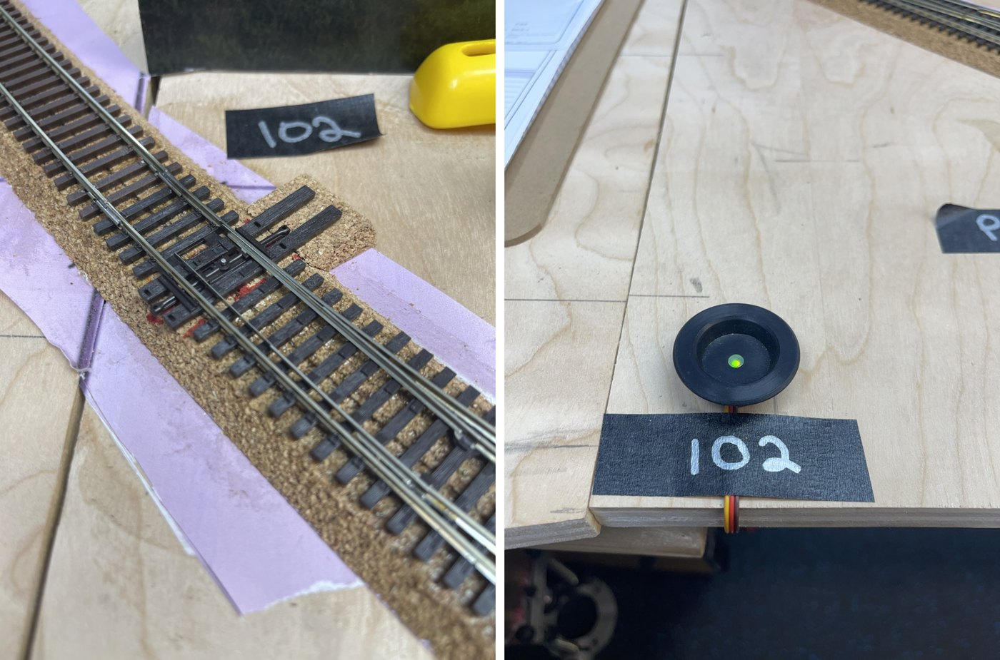

All 43 sections are detected. A section shows as occupied on the computer panels when a locomotive, or a car with resistor wheelsets, is on it. The form asks for at least five blocks.
Detection works by sensing current. The district bus, both rails, feeds a DNCT2B detector's rail input. The DNCT2B has two outputs, and each one feeds the feeders of one section, so the detector sees any current drawn in that section. Each DNCT2B plugs into a DNCTA by network cable, and one DNCTA connects up to four DNCT2Bs to the nearby LCOS client node, which reports each section as occupied or clear (drawing D2).
Parts: DNCT2B and DNCTA detectors and LCOS nodes (Beagle Bay Inc.), JMRI for the panels. Drawing: D2. List of sections: Appendix B.


The LCOS nodes under the layout talk to each other by radio. Each node is an Arduino Nano with an nRF24L01 radio. LCOS did not come with a way to connect to JMRI, so I designed and programmed one. It has two parts (drawing D6):
JMRI has a built-in MQTT connection, so every LCOS turnout, sensor and signal shows up in JMRI as a normal turnout, sensor or signal. The address is the node number and the device number: turnout 1308 is turnout 8 on node 13. For example, the line track/turnout/1308 THROWN means that turnout has thrown. shows real traffic.
I also added checks to keep the two sides in step. The program checks the USB link about every 12 seconds and reconnects if it stops answering. After the layout power is turned off and on, it tells the node to sign up for events again. It also reports whether the link is up, so the panels can show it.
I started the bridge in February 2026. It is how the computer talks to the layout every time the layout runs. I published it as open source on GitHub (github.com/lnevo/LCOS_ESP32_MQTT_Client) so other LCOS users can use it.
| Bridge node firmware (C++) | About 1,200 lines |
| Bridge program (Python) | About 2,100 lines |
| Automated tests | 29 |
| Changes saved (commits) | 146, February to November 2026 |
My work: the bridge firmware, the bridge program, and the message format between them. Parts I used: LCOS boards and library (Beagle Bay Inc.), Arduino Nano, nRF24L01 radio, JMRI, the Mosquitto MQTT server.
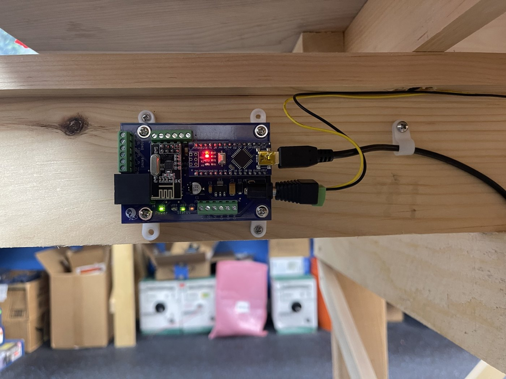

MQTT RX turnout cmd topic='track/cmd/turnout/1308' qos=1 retain=False raw_bytes=b'THROWN' MQTT turnout queued for serial: 'track/cmd/turnout/1308 THROWN' MQTT -> serial b'track/cmd/turnout/1308 THROWN\n' ACK track/cmd/turnout/1308 THROWN TX -> track/turnout/1308 THROWN TX -> track/sensor/1367 INACTIVE TX -> track/sensor/1368 ACTIVE TX -> track/sensor/1368 ACTIVE MQTT RX turnout cmd topic='track/cmd/turnout/1308' qos=1 retain=False raw_bytes=b'CLOSED' MQTT turnout queued for serial: 'track/cmd/turnout/1308 CLOSED' MQTT -> serial b'track/cmd/turnout/1308 CLOSED\n' ACK track/cmd/turnout/1308 CLOSED TX -> track/turnout/1308 CLOSED TX -> track/sensor/1367 ACTIVE TX -> track/sensor/1368 INACTIVE TX -> track/sensor/1368 INACTIVE
I made drawings D1 to D6 for this application. They are on the landscape pages after Chapter 6. Appendix F has pages from my railroad's own wiring records: power districts, bus wiring, node and turnout wiring, and the node and turnout summaries.
| Drawing | Shows | For |
|---|---|---|
| D1 | Throttles, command station, booster, breakers and auto-reversers | Req. 4: speed and direction control, switches, power supplies |
| D2 | A typical section: bus, feeders, gaps, detector | Req. 4: gaps, blocks, feeders; Req. 5: occupancy (b) |
| D3 | Turnout: frog power and position contact | Req. 5: turnout, turnout position (a) |
| D4 | Crossover: frogs, gaps and position indication | Req. 5: crossover, turnout position (a) |
| D5 | Reversing section on an auto-reverser, with its detector | Req. 5: reversing sections |
| D6 | The bridge between LCOS and JMRI | Req. 5: computer-to-railroad interface (v) |
Requirement 4 asks the propulsion drawing to show six things. Gaps, blocks and feeders are in D2. Speed and direction control, the electrical switches (booster matrix, breakers and auto-reversers) and the power supplies are in D1. The frog switch is in D3. In Appendix F, the power district and bus wiring pages show the as-built wiring, and the node and turnout pages show the wiring behind each item in Requirement 5.
Not to scale. Red is track power, blue is detection and data, grey is nearby track. In D6, the shaded boxes are my own work.
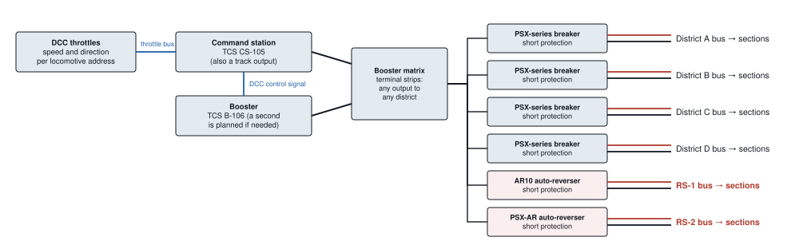

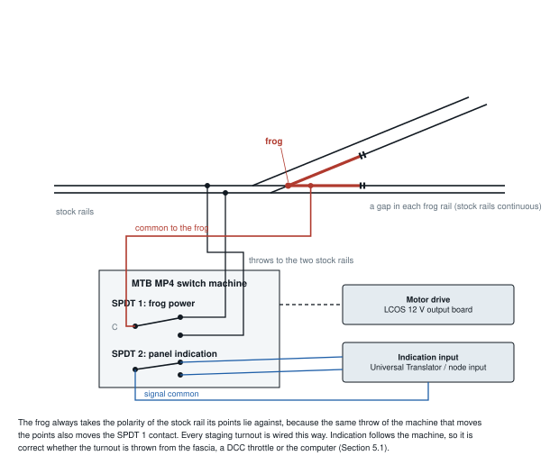
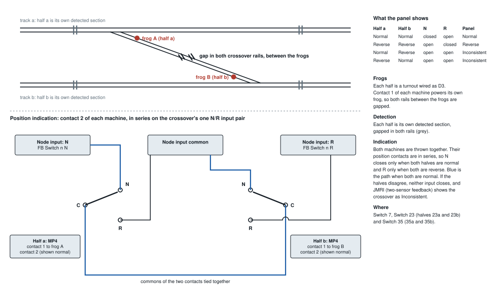

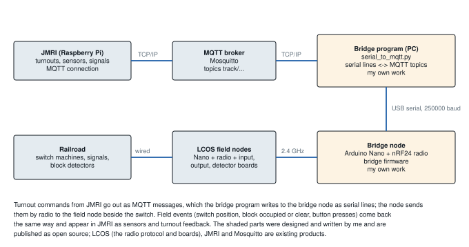
The labels in this document and the names used on the layout and in the wiring records (Appendix F).
| Label | Name on the layout |
|---|---|
| RS-1 (main line, west) | Main West |
| Main line, east | Brick-Plane, East Ext, Main East |
| Double track at the east end | West Ext and East Lead |
| RS-2, return loop | K-1 and K-2, the loop at Princess |
| Passing siding | Scale, at Plane |
| Yard lead | Barn |
| Y1, Y2, Y3, Y4, Y5 | South Yard S-R, S-1, S-2, S-3, S-4 |
| E1, E2, E3 | EH-1, EH-2, EH-3 |
| Holding tracks | W-1 and W-2, West Yard |
| LCOS nodes on staging | C1, C2, C3, C4, C11, C12, C13 |

Every detected section on the staging level and helix. Each one has gaps in both rails at both ends and is wired as in drawing D2. "Node · ch" is the LCOS node and detector channel. Lengths marked ≈ are estimates.
{{APPENDIX_B}}| Part | Maker | Used for |
|---|---|---|
| CS-105 command station | TCS | DCC command station |
| B-106 booster | TCS | Track power |
| PSX circuit breakers | DCC Specialties | Districts A to D |
| AR10 auto-reverser | NCE | RS-1 |
| PSXX-AR auto-reverser | DCC Specialties | RS-2 |
| Turnouts | Peco | All turnouts and crossovers |
| MP4 switch machines | MTB | Throwing turnouts, frog power, position contact |
| Touch Toggles, Universal Translator | Berrett Hill | Fascia buttons and lights |
| LCOS nodes and boards | Beagle Bay Inc. | Switch machine outputs, inputs |
| DNCT2B detectors, DNCTA | Beagle Bay Inc. | Block detection (DNCT2B, two sections each); linking up to four DNCT2Bs to a node (DNCTA) |
| Arduino Nano, nRF24L01 radio | Arduino; various | Bridge node |
| Raspberry Pi | Raspberry Pi Ltd | Runs JMRI and the MQTT server |
| JMRI, Mosquitto | Free software | Panels; MQTT server |
These are built and working, but I am not claiming them. I can show any of them if the evaluator wants one in place of a claimed feature.
Where each LCOS radio node sits in the layout room, by its radio address. The bridge node (015) and the nodes on the staging level are among those in service.

These pages are my railroad's own wiring records as of {{DATE}}. They use the layout's names; Appendix A matches them to the labels in this document.
{{APPENDIX_RECORDS}}